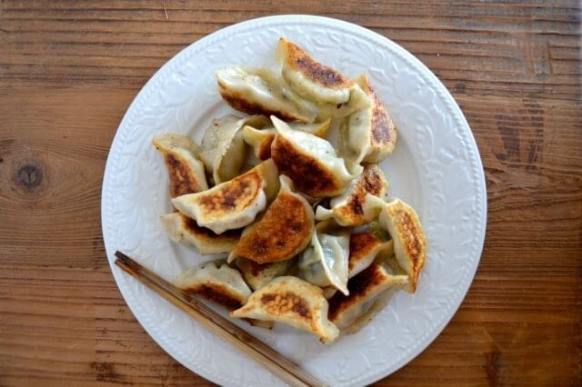

Dumplings Recipe

Recipe taken from here
A recipe for making simple dumplings in just a few steps
Ingredients
- 3 lbs green leafy vegetables
- 1 ½ pounds ground pork
- 2/3 cup shaoxing wine (or dry cooking sherry)
- ½ cup neutral oil (such as canola, vegetable, or avocado oil)
- 3 tablespoons sesame oil
- 1 tablespoon salt
- 3 tablespoons soy sauce
- ¼ teaspoon white pepper
- 2/3 cup water (plus more for assembly)
- 3 packages dumpling wrappers
Instructions
- Wash your vegetables thoroughly and blanch them in a pot of boiling water. (1 minute for delicate leaves like Shepherd's purse, or 2 minutes for a more robust vegetable like napa cabbage or baby bok choy.) Cool by transferring to an ice bath or a colander under cold running water. Ring out all the water from the vegetables and chop very finely.
- In a large bowl, stir together the vegetables, meat, wine, oil, sesame oil, salt, soy sauce, white pepper, and water. Mix vigorously for 6-8 minutes (or even up to 10 minutes), until very well-combined and paste-like.
- To wrap the dumplings, dampen the edges of each circular wrapper with some water. Put a little less than a tablespoon of filling in the middle. Fold the circle in half and pinch the wrapper together at the top. Then make two folds on each side, until the dumpling looks like a fan. Make sure it’s completely sealed.
- Boil a couple dumplings to taste test them, and adjust seasoning if needed. Finish assembling the dumplings, placing them on a parchment-lined baking sheet so they are not touching.
- To freeze: wrap the baking sheets tightly with plastic wrap and put the pans in the freezer. Freeze overnight, then transfer the dumplings to freezer bags, and transfer back to the freezer for later.
- To boil: bring a large pot of water to a boil, drop the dumplings in, and bring back up to a boil. Simmer for 6-8 minutes (shorter for fresh dumplings, longer for frozen).
- To pan-fry: heat 2 tablespoons oil in a non-stick pan over medium-high heat. Place the dumplings in the pan and allow to fry for 2 minutes. Pour a thin layer of water into the pan, cover, and reduce heat to medium-low. Allow dumplings to steam until the water has evaporated. Remove the cover, increase heat to medium-high and allow to fry for a few more minutes, until the bottoms of the dumplings are golden brown and crisp.